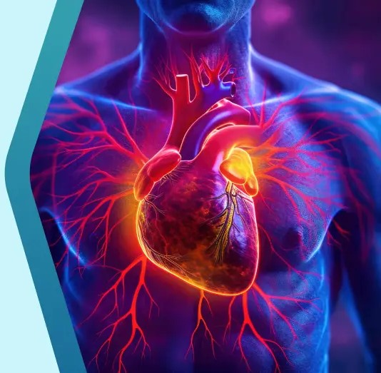

Cardiovascular Disease (CVD)


Key Symptoms of CVD
If you experience any of these signs, seek medical attention immediately:
- Chest Pain: Discomfort, pressure, or squeezing.
- Breathlessness: Shortness of breath during activity or rest.
- Physical Weakness: Feeling light-headed, dizzy, or faint.
- Referred Pain: Discomfort in the jaw, neck, throat, or upper back.
- Shoulder Pain: Pain radiating down the arms or shoulders.
Preventive Remedies & Lifestyle
Managing heart health requires a consistent approach to daily habits:
- Tobacco Cessation: Quit smoking and avoid second-hand smoke.
- Stress Management: Practice meditation or deep breathing.
- Blood Pressure Control: Regular monitoring and medication if prescribed.
- Physical Activity: At least 30 minutes of moderate exercise daily.
- Dietary Habits: Low-sodium, high-fiber, and heart-healthy fats.
- Weight Management: Maintain a BMI within the healthy range.
For expert guidelines, visit: American Heart Association

Dr. Devi Prasad Shetty
Renowned Cardiac Surgeon & Philanthropist
Dr. Devi Prasad Shetty is a globally recognized Indian cardiac surgeon and the founder of Narayana Health. With a career spanning decades, he has performed over 100,000 heart operations, focusing on making high-quality cardiac surgery affordable for everyone.
He was awarded the Padma Shri (2004) and Padma Bhushan (2012) for his revolutionary work in healthcare. He is a pioneer in micro-health insurance and high-volume, low-cost medical models.
Education: MBBS & MS from Kasturba Medical College, Mangalore, with advanced specialization from the United Kingdom (NHS).
View Detailed Biography